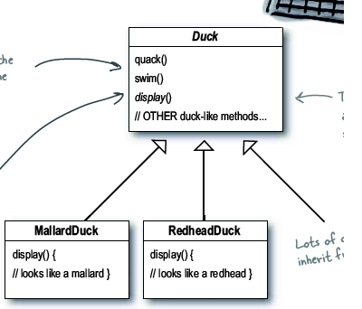
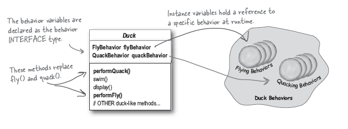

strategy模式¶
strategy模式定义¶
strategy 定义了一类的算法,并且封装每一个算法,使得每个算法可以互换. strategy 使得从使用它的用户那里 独立 地 变化.
问题描述¶
在实际的OO设计中可能会面对需求不断变化的情况,而如何能够不改变已有的代码,而去适应新的需求 这就是设计模式的意义.
场景描述:
一个游戏模拟公司的一个鸭子游戏的最初设计如下:
此时新的需求来了,要求为鸭子增加 飞 和 叫 两个功能.
开始我们可能会想使用继承,直接在父类增加 void fly() 和 void quack() 两个方法.
但是经过进一步思考,可能某些鸭子 不会飞 , 如塑料鸭子, 有的鸭子也不会叫, 即使都会飞,都会叫,可能叫法和飞法也不同.
经过我们的深思熟虑,我们决定采用这样的类图:

注解
使用委托( delegate )的方法,让一个类集来完成 差异化 部分,此处即为飞翔和叫.
在这个类集中,我们对于不同的具体的飞翔和叫实现不同的方法,即 fly 和 quack 的具体实现.
而保持主类 Duck 的 纯净 (即与差异化的部分无耦合,或者很少), 这样当增加新的需求时 无需更改主类.
具体的主类 Duck 的类图如下:
完整的类图如下:

具体的代码¶
下载请点击 这里
1 2 3 4 5 6 7 8 9 10 11 12 13 14 15 16 17 18 19 20 21 22 23 24 25 26 27 28 29 30 31 32 33 34 35 36 37 38 39 40 41 42 43 44 45 46 47 48 49 50 51 52 53 54 55 56 57 58 59 60 61 62 63 64 65 66 67 68 69 70 71 72 73 74 75 76 77 78 79 80 81 82 83 84 85 86 87 88 89 90 91 92 93 94 95 96 97 98 99 100 101 102 103 104 105 106 107 108 109 110 111 112 113 114 115 116 117 118 119 120 121 122 123 124 | #include <iostream>
using namespace std;
class FlyBehavior
{
public:
virtual void fly(){}
};
class QuackBehavior
{
public:
virtual void quack(){}
};
class FlyWithWind:public FlyBehavior
{
public:
void fly()
{
cout<<"I'm really flying"<<endl;
}
};
class FlyFake:public FlyBehavior
{
public:
void fly()
{
cout<<"I can't fly."<<endl;
}
};
class Quack:public QuackBehavior
{
public:
void quack()
{
cout<<"GuaGua, I'm quacking"<<endl;
}
};
class QuackSilence:public QuackBehavior
{
public:
void quack()
{
cout<<"I can't quack at all"<<endl;
}
};
class Duck
{
public:
QuackBehavior* quackBehavior;
FlyBehavior* flyBehavior;
void performFly()
{
flyBehavior->fly();
}
void performQuack()
{
quackBehavior->quack();
}
void setFlyBehavior(FlyBehavior *f)
{
flyBehavior = f;
}
void setQuackBehavior(QuackBehavior *q)
{
quackBehavior = q;
}
virtual ~Duck()
{
// 由于变量中有new生成的成员变量,所以需要释放空间
// 此处为虚函数,则会在运行时动态绑定
delete quackBehavior;
delete flyBehavior;
cout<<"I am destroyed."<<endl;
}
};
class RealDuck:public Duck
{
public:
RealDuck()
{
quackBehavior = new Quack();
flyBehavior = new FlyWithWind();
}
};
class FakeDuck:public Duck
{
public:
FakeDuck()
{
// new 生成的实例为指针型
quackBehavior = new QuackSilence();
flyBehavior = new FlyFake();
}
};
int main()
{
Duck *duck;
RealDuck real; //真的会叫会飞的鸭子
FakeDuck fake; //假的不会飞不会叫的鸭子
duck = ℜ //动态绑定到真鸭子
duck->performFly();
duck->performQuack();
duck = &fake; //动态绑定到假鸭子
duck->performFly();
duck->performQuack();
duck->setFlyBehavior(new FlyWithWind()); //运行时更改飞的属性
duck->performFly();
return 0;
}
|
输出结果为:
I'm really flying
GuaGua, I'm quacking
I can't fly.
I can't quack at all
I'm really flying
I am destroyed.
I am destroyed.
面对新需求¶
如果这时客户又有增加一个 吃 的需求时, 我们这时可以这样应对:
- 增加一个 EatBehavior 基类,并定义相应的各种 吃 的类集
- 在 Duck 类中增加代理成员,类似于 flyBehavior 和 peformEat() 成员方法
- 即可
补充:
虽然对主类 Duck 增加了相关的成员和成员函数,但是 增加远比修改要好的多.
更多注意¶
设计准则¶
- Identify the aspects of your application that vary and seperate them from what stays the same
- Program to an interface, not an implementation
- Favor composition over inheritance
Program to an interface not to an implementation.
如何理解这句话?
注解
Program to an implementation 的代码会像这样:
Dog d = new Dog();
d.bark();
Cat c =new Cat();
c.mio();
而 Program to interface 的代码会是这样:
Animal *a;
Dog d;
Cat c;
a = &d;
a->makeSound();
a = &c;
a->makeSound();
// 甚至我们可以这样
a = getAnimal(); // 运行时获得特定的动物
a->makeSound();